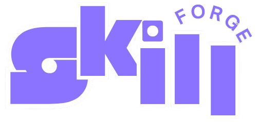

SkillForge
A platform connecting university students with businesses for project-based work. I was the architect and sole full-stack developer, designing the system from zero to production.

The Problem
Students lacked a structured way to find real-world project experience, while businesses struggled to discover vetted talent for short-term engagements. Existing solutions were either too generic (job boards with no matching logic) or required heavy manual matching by university career offices.
The result: students graduated with no practical portfolio, and businesses spent weeks filtering unqualified applicants through traditional channels.
The Approach
I designed the entire system from scratch with a clear separation of concerns across three service layers:
- Go API Gateway — handled authentication (JWT), routing, and served as the single entry point for all client requests. Chosen for its concurrency model and low latency overhead.
- Python/FastAPI AI Microservice — the intelligence layer. Built an NLP pipeline that parses uploaded resumes, extracts skills using keyword extraction and classification, and maps them against a taxonomy of 15+ skill categories. This powered the automated matching engine.
- SvelteKit Frontend — two distinct dashboards interfaces: one for students to build profiles and browse matched opportunities, another for companies to post projects and review applicant skill scores.
All services were containerized with Docker, connected via an internal network, and orchestrated for local development with Docker Compose. This ensured any team member could spin up the full stack with a single command.
The Outcome
- AI-powered resume parser extracting 15+ skill categories with 90%+ accuracy, eliminating manual skill tagging entirely.
- Reduced skill-matching time from hours to seconds via an automated scoring algorithm that ranked student-project compatibility.
- End-to-end architecture shipped solo — backend gateway, AI pipeline, and two distinct frontend dashboards — demonstrating full-stack ownership from schema design to deployment.